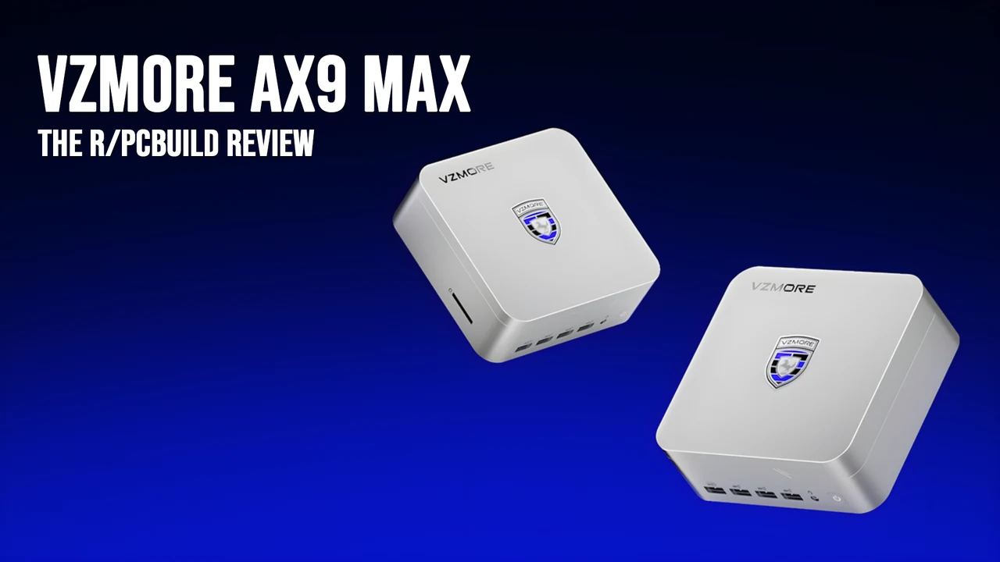

VZMORE AX9 Max
AMD Gorgon Point in the Palm of Your Hand — The r/PcBuild Review

Hey gang, Im back again with another review, with the AX9 Max from VZMORE, which turned out to be rather impressive!
Disclosure: This review unit was provided by VZMORE for independent review. No monetary compensation was exchanged, and VZMORE had no editorial input over the content of this review.
Originally posted in r/PcBuild. Read the original review and discussion on Reddit ↗
1. Introduction:
The VZMORE AX9 Max is a compact mini-PC engineered to push the limits of small-form-factor performance by pairing AMD's Gorgon Point architecture with an advanced vapor chamber cooling solution.
Who is VZMORE?
VZMORE is a new player in the space, established in 2026 and has carved out a niche in the space by improving upon cooling in mini pcs by utilising large vapour chambers and focusing on high end workhorses in a small form factor.
Specifically with their first releases, the AX9 Max and IX9 Max, rather than compromising on memory or throttling underload, they target prosumers like developers compiling heavy codebases, home lab enthusiasts requiring headless 24/7 hypervisors or people who want to run their own local LLMs and who want to bypass the 8GB VRAM paywall without running a 300W ATX desktop rig.
What's inside the AX9 Max?
Let’s get straight to the specs of the PC since that is by far the coolest part.
- CPU: AMD Ryzen AI 9 HX 470 (12 Cores / 24 Threads: 4x Zen 5 + 8x Zen 5c, up to 5.2 GHz boost)
- IGPU: AMD Radeon 890M (RDNA 3.5 architecture, 16 Compute Units @ 3,100 MHz)
- NPU: AMD XDNA 2 architecture delivering up to 50–55 TOPS INT8 local AI compute
- RAM: 32GB (2x 16GB) DDR5-5600 MT/s in dual-channel SO-DIMM configuration
- Storage: 1TB PCIe 4.0 NVMe M.2 SSD (expandable, 1x 2230, 1x 2280)
- Networking: Dual 2.5GbE RJ-45 LAN, Wi-Fi 7, and Bluetooth 5.4
- Power Supply: 120W DC Barrel Jack adapter
The cooling system is a substantial fin array complemented by a vapour chamber which proved to be rather effective in my testing.
2. Unboxing and Industrial Design
Packaging and Included Accessories
The AX9 Max ships in a minimalist matte white presentation box sporting the outline of the device and the ax9 max identifier, secured with tamper seals. Opening the magnetic lid reveals the main unit seated firmly a custom card insert, laid out rather nicely and all the accessories in their own compartments, wrapped in paper.
Alongside the PC, VZMORE includes a set of accessories:
- 1x 120W compact DC barrel-jack power adapter
- 1x Ultra-high-speed HDMI 2.1 cable (1.0m)
- 1x Solid steel VESA mounting plate with screws
- 1x Quick-start hardware manual & warranty documentation
Chassis Build Quality and Form Factor
Measuring approximately 130 mm x 128 mm x 55 mm, the AX9 Max occupies virtually the same footprint as a desktop headphone amplifier, making it effortless to integrate into clean desk setups.
The chassis construction is predominantly CNC-machined anodized aluminium with grey anodized finish that resists fingerprints. Aside from offering structural rigidity, the metal shell acts as a secondary heat spreader. The bottom plate utilizes rigid, high-impact ABS housing four non-slip rubber feet with integrated cutouts that dampen desk resonance and allow reuse without destroying adhesive tape. The bottom plate is also magnetically attached alongside the 4 screws. Which is nice to see.
I/O Layout and Connectivity
The number of ports on the PC honestly took me back a bit, especially just the 4 USB-As on the front. Though it would have been nice to see 1 or 2 USB-Cs alongside them for external SSD use or otherwise.
Front Panel:
- 4x USB 3.2 Gen 2 Type-A ports (10 Gbps)
- 1x 3.5mm combo headphone/microphone audio jack
- 1x Power button with an integrated status LED
Rear Panel:
- 2x Full-spec USB4 Type-C ports (40 Gbps, DP Alt Mode, and Power Delivery passthrough)
- 1x USB 3.2 Gen 2 Type-A port (10 Gbps)
- 1x USB 2.0 Type-A port
- 2x HDMI 2.1 display outputs (supporting up to 4K @ 120Hz / 8K @ 60Hz)
- 2x 2.5GbE RJ-45 Ethernet ports (ideal for multi-WAN, routing, or segregated home lab hypervisor subnets)
- 1x 19V DC-In power port
Internal Access and Upgradability
Gaining access to the internals is a nice change in an world dominated by soldered, anti-consumer hardware, especially on smaller footprint devices.
- Four Phillips head screws sit recessed beneath the rubber feet.
- Lifting the bottom cover reveals a secondary internal aluminium bracket that shields the internals, acts as a passive heatsink for the M.2 SSDs and as an antenna.
- Beneath the shield, is the internals, with easy access to the dual SODIMMS, which are populated with dual DDR5 DIMMS, the primary 2280 m.2 NVME and a secondary 2230 slot. Underneath the main SSD is where you find the WiFi-7 Module, which is a MediaTek modem.
3. Thermal Engineering: The V-Cooling™ Vapor Chamber
The Technology: Vapor Chamber vs. Heat Pipes
Traditional mini-PCs rely on basic sintered copper heat pipes soldered to fin stacks. While functional, heat pipes create localized hot spots across the components.
VZMORE utilizes a custom V-Cooling™ vapor chamber that covers the APU die, power delivery stages, and surrounding controller circuitry. By utilizing a two-phase hermetically sealed vacuum chamber containing working liquid that vaporizes and condenses across an internal flat surface, the heat is then transferred to a large fin array with fresh air rushing through to remove the heat
Sustained Stress Testing & Thermal Results
To evaluate sustained thermal dissipation, the AX9 Max was subjected to a 60-minute sustained power test (simultaneous AVX-512 CPU workload alongside 3D rendering) at an ambient room temperature of 25°C (my room is quite hot)
- Sustained Package Power: Locked stably at 65W without thermal throttling or clock dropping.
- Peak CPU Temperature: Peaked at 78.6°C before stabilizing around 74–76°C.
- iGPU Temperature: Never exceeded 60.1°C, leaving thermal headroom for graphic tasks.
- Acoustic Profile: Under idle workloads, the system was inaudible (<26 dBA). Under the full 65W stress test, the blower fan spun up into a smooth, low-pitch whoosh peaking at 37.8 dBA, completely avoiding the shrill whine typical of cheap compact blowers.
4. The Parts Used
Zen 5 + Zen 5c:
The Ryzen AI 9 HX 470 pairs 4 Zen 5 performance cores with 8 Zen 5c dense cores for 12 cores and 24 threads. Unlike standard big.LITTLE designs that strip instruction sets from efficiency cores, both Zen 5 and Zen 5c share identical ISA support, including native AVX-512. These cores are complimented by AMDs 2nd generation XDNA NPU which has 55 TOPS itself but 86 TOPS when combined with the performance from the CPU and GPU.
From my testing and use with this CPU, it genuinely gives my primary 12700kf a run for its money
The AX9 Max Features two standard SODIMM slots running dual channel. Whilst VZMORE cites the platform supports up to 256gb, the AX9 Max itself currently only supports up to 128GB via 2 x 64GB, however future releases may see 128GB DIMMS.
5. Synthetic Benchmarks
- Geekbench 6: Single-core and Multi-core runs. The AX9 achieved a 2978 pt Single Core Score and 15125 pt Multi-Core Score.
- Cinebench 2024: Sustained rendering performance. Single-core score reached 119 pts, multi-core reached 1,163 pts.
- 3DMark Steel Nomad & Steel Nomad Light. Standard test score: 711 (7.12 FPS). Light test score: 3,368 (24.95 FPS).
- Storage & Connectivity Performance: CrystalDiskMark sequential reads reached ~5,788 MB/s and writes reached ~4,437 MB/s.
- Bluetooth & Networking: Stable Bluetooth connection throughout testing with no audio dropouts. Ethernet tests showed complete saturation of a 1Gb network connection over a Realtek NIC.
- VRAM Allocation: 4GB dedicated to GPU out of the box, fully reconfigurable in BIOS. Up to 24GB! Making it even better for AI, bypassing windows dynamic ram usage.
6. Gaming Benchmarks
6.1 Forza Horizon 6
- Settings: Medium / High Preset, Ray Tracing Off.
- Metrics: Average 40 FPS at 1080p high, 37fps at 1440p high WITH FSR 4.1.1, 45fps at 1440p low
- Experience: For a new AAA game, it genuinely felt good to play especially with FSR and even more if you are willing to mess around with settings.
6.2 Forza Horizon 5
- Settings: High/ Extreme Preset.
- Metrics: Reached 40 FPS at 1080p High with RT, 51 FPS at 1080p Extreme, and up to 45 FPS at 1440p Low preset.
- Experience: This was by far the best playing game, and achieving playable ray tracing on 1080p High in such a compact package is particularly impressive.
6.3 Dirt Rally 2.0
- Settings: High/Ultra/Low Preset.
- Metrics: Reached 72 FPS at 1080p High, 54 FPS at 1080p Ultra, and up to 48 FPS at 1440p Medium preset.
- Comparison: Radeon 890M delivers playable 1080p/1440p frame rates, rivalling entry-level discrete GPUs like the lower power RTX 3050 Mobile while drawing significantly less power.
6.4 Tom Clancy’s Rainbow Six Siege (DirectX 12)
- Settings: Low / High Preset.
- Metrics: Reached 89 FPS at 1080p High (68 FPS min, 96 FPS max), 74 FPS at 1440p High (59 FPS min, 85 FPS max), and 60 FPS at 1440p Low (56 FPS min, 63 FPS max).
- Comparison: The Radeon 890M handles fast-paced competitive shooters with ease, consistently holding minimum framerates near or well above 60 FPS even at 1440p High while drawing minimal power and keeping GPU temperatures under 68°C, Im not making that joke, shoo.
6.5 Shadow of the Tomb Raider (DirectX 12)
- Settings: High Preset, Ray Tracing Off.
- Metrics: Reached an average of 35 FPS at 1080p High (31 FPS min, 48 FPS max), and 24 FPS at 1440p High (19 FPS min, 32 FPS max).
- Comparison: While native 1440p High pushes the Radeon 890M to its absolute limit at 24 FPS (69% GPU bound), dropping down to 1080p High achieves a stable 35 FPS. Which is on par with consoles!
7. Home Server and Linux Testing
- OS Compatibility: Tested under Ubuntu 24.04 LTS (Kernel 6.8) and Proxmox VE 8.2. Out-of-the-box hardware detection was seamless across both distributions without requiring custom kernel patches or out-of-tree drivers.
- Idle Power: The PC pulled only 8.2W at the wall under headless Ubuntu. AMD XDNA driver support via AMDXDNA allowed the NPU to work for Linux AI workloads and I could use local models.
- Virtualization & Container Density: Under Proxmox, the 12 cores and 32GB RAM sustained 25+ lightweight Debian containers and 3 full virtual machines without running out of cores or thermal throttling.
8. Local AI: Gemma 4 26B & Qwen3.6-35B-A3B (Radeon 890M, Vulkan RADV)
With rising memory prices putting 16GB+ discrete GPUs out of reach for budget home labs, running local LLMs on integrated graphics is a flagship selling point for AMD's Gorgon Point platform and the AX9 Max especially. Testing was done on the 890M under Ubuntu using llama.cpp (build 11238, Vulkan/RADV backend) with 24.0 GiB of dedicated VRAM dedicated in the BIOS. I did go mildly overkill with the testing.
Real-World Prompt Benchmarks (llama-server, Temperature 0)
| Model | Architecture / Quant | Workload Scenario | Prompt Tokens | TTFT | Eval Speed | Peak VRAM | System RAM |
|---|---|---|---|---|---|---|---|
| Gemma 4 26B | 25.2B Dense (Q4_K_M, 15.8 GiB) | Short Q&A | 27 | 0.30s | 21.8 t/s | 17.8 GiB | 5.7 GiB |
| Gemma 4 26B | 25.2B Dense (Q4_K_M, 15.8 GiB) | Code Generation (500T) | 31 | 0.31s | 21.4 t/s | 17.8 GiB | 5.7 GiB |
| Gemma 4 26B | 25.2B Dense (Q4_K_M, 15.8 GiB) | Reasoning / Math | 50 | 0.38s | 21.7 t/s | 17.8 GiB | 5.7 GiB |
| Gemma 4 26B | 25.2B Dense (Q4_K_M, 15.8 GiB) | Long Context (~5.7k) | 5,745 | 10.97s | 19.3 t/s | 17.8 GiB | 5.7 GiB |
| Qwen3.6-35B-A3B | 34.7B MoE (Q4_K_M, 20.6 GiB) | Short Q&A | 27 | 0.50s | 24.8 t/s | 21.5 GiB | 5.1 GiB |
| Qwen3.6-35B-A3B | 34.7B MoE (Q4_K_M, 20.6 GiB) | Code Generation (416T) | 30 | 0.50s | 24.7 t/s | 21.5 GiB | 5.1 GiB |
| Qwen3.6-35B-A3B | 34.7B MoE (Q4_K_M, 20.6 GiB) | Reasoning / Math | 49 | 0.61s | 24.8 t/s | 21.5 GiB | 5.1 GiB |
| Qwen3.6-35B-A3B | 34.7B MoE (Q4_K_M, 20.6 GiB) | Long Context (~5.6k) | 5,624 | 10.14s | 23.8 t/s | 21.5 GiB | 5.1 GiB |
Speculative Decoding & Multi-Token Prediction (MTP) Tuning
To push inference throughput further on the MoE architecture, I tested Qwen3.6-35B-A3B using speculative decoding with its native Multi-Token Prediction (MTP) drafting heads:
| Configuration | Quant Size | Generation Speed | vs Standard Q4_K_M | Draft Acceptance Rate | Prompt Speed (~3k tok) | Peak VRAM |
|---|---|---|---|---|---|---|
| mtp-UD-IQ4_XS-n2 | 17.0 GiB | 34.2 t/s | 1.38x | 73% | 531 t/s | 17.8 GiB |
| mtp-UD-IQ4_XS-n3 | 17.0 GiB | 33.9 t/s | 1.37x | 66% | 523 t/s | 17.9 GiB |
| mtp-UD-IQ4_XS-n1 | 17.0 GiB | 32.6 t/s | 1.32x | 84% | 526 t/s | 17.8 GiB |
| mtp-UD-IQ4_XS-n0 | 17.0 GiB | 25.5 t/s | 1.03x | — | 551 t/s | 17.2 GiB |
Zero CPU Offload Penalty: With 24GB of dedicated VRAM, both the 25.2B dense and 34.7B MoE models fit 100% into GPU memory, eliminating PCIe bus bottlenecking entirely.
- Speculative Speedup: Utilizing 2-token MTP drafting (n2) on IQ4_XS boosted generation from the standard 24.7 t/s rate up to 34.2 t/s at a 73% acceptance rate, while keeping the memory footprint under 18GB which left ample headroom for larger context buffers.
9. Conclusion and Verdict
Pros
- Remarkable performance-per-watt from AMD's Zen 5 + Zen 5c architecture.
- Best-in-class Radeon 890M integrated graphics capable of solid 1080p and light 1440p gaming.
- Sustained 65W thermal dissipation without thermal throttling, supported by an exceptionally quiet acoustic profile (<38 dBA).
- Reconfigurable BIOS VRAM allocation (up to 24GB) enables effortless execution of 25-35B+ parameter local AI models.
- Dual 2.5GbE networking, Wi-Fi 7, and dual USB4 ports provide unmatched I/O versatility.
- Unsoldered, modular DDR5 SO-DIMM and dual M.2 storage slots.
Cons
- Premium pricing over previous-generation Zen 3/Zen 4 mini-PCs.
- All four front I/O ports are Type-A. A front-mounted USB-C port would have improved usability for modern flash drives.
- Modest ray-tracing compute ceiling (expected for an iGPU).
- Brand is a newcomer to Western markets without established long-term firmware track records.